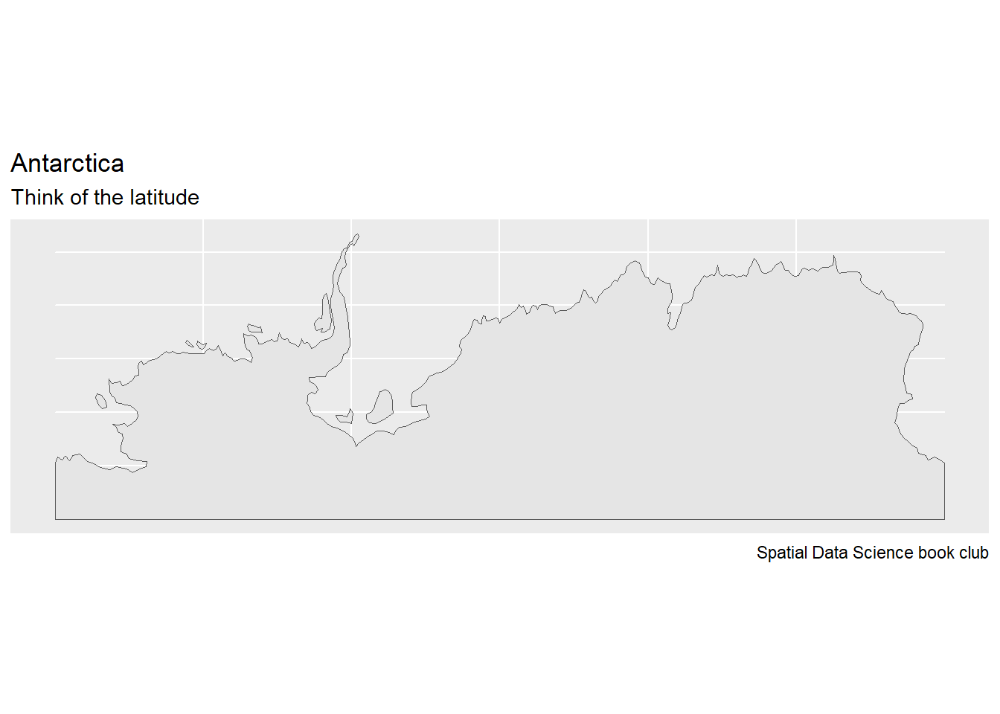
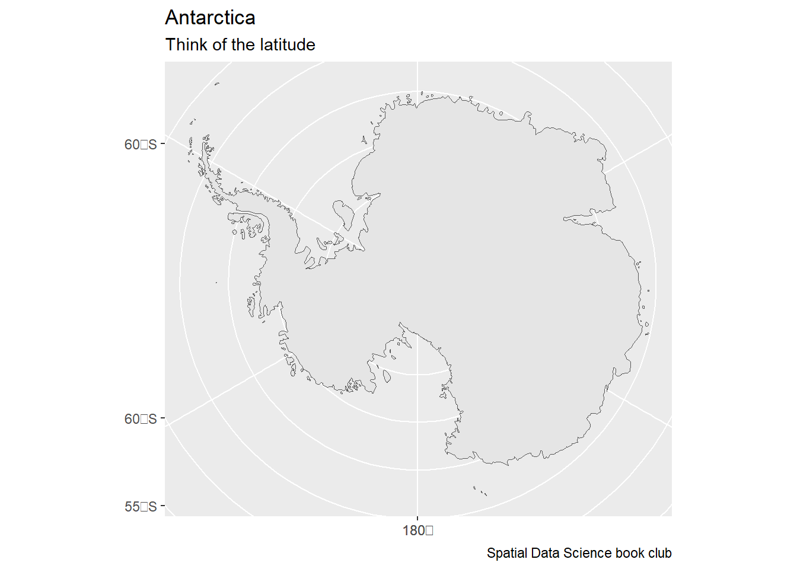

How does the GeoJSON format (Butler et al. 2016) define “straight” lines between ellipsoidal coordinates (Section 3.1.1)? Using this definition of straight, how does LINESTRING(0 85,180 85) look like in an Arctic polar projection? How could this geometry be modified to have it cross the North Pole?
For a typical polygon on \(S^2\), how can you find out ring direction?
A convention here is to define the inside as the left (or right) side of the polygon boundary when traversing its points in sequence. Reversal of the node order then switches inside and outside.
Maps of Antarctica should probably display the South Pole. Do the following maps display the South Pole?
Planar (Ellipsoidal Coordinates)
# maps packagem <-st_as_sf(map(fill=TRUE, plot=FALSE))Antarctica_map_A <- m[m$ID =="Antarctica", ]st_geometry(Antarctica_map_A) |>ggplot() +geom_sf() +labs(title ="Antarctica", subtitle ="Think of the latitude",caption ="Spatial Data Science book club")
sf::st_is_valid(Antarctica_map_A)
[1] TRUE
# Natural Earth packagene <-ne_countries(returnclass ="sf")Antarctica_map_B <- ne[ne$region_un =="Antarctica", "region_un"]st_geometry(Antarctica_map_B) |>ggplot() +geom_sf() +labs(title ="Antarctica", subtitle ="Think of the latitude",caption ="Spatial Data Science book club")

sf::st_is_valid(Antarctica_map_B)
[1] TRUE
Spherical (Polar Stereographic Projection)
Antarctica_map_C <-st_geometry(Antarctica_map_A) |>st_transform(3031)Antarctica_map_C |>ggplot() +geom_sf() +labs(title ="Antarctica", subtitle ="Think of the latitude",caption ="Spatial Data Science book club")

sf::st_is_valid(Antarctica_map_C)
[1] TRUE
Antarctica_map_D <-st_geometry(Antarctica_map_B) |>st_transform(3031)Antarctica_map_D |>ggplot() +geom_sf() +labs(title ="Antarctica", subtitle ="Think of the latitude",caption ="Spatial Data Science book club")